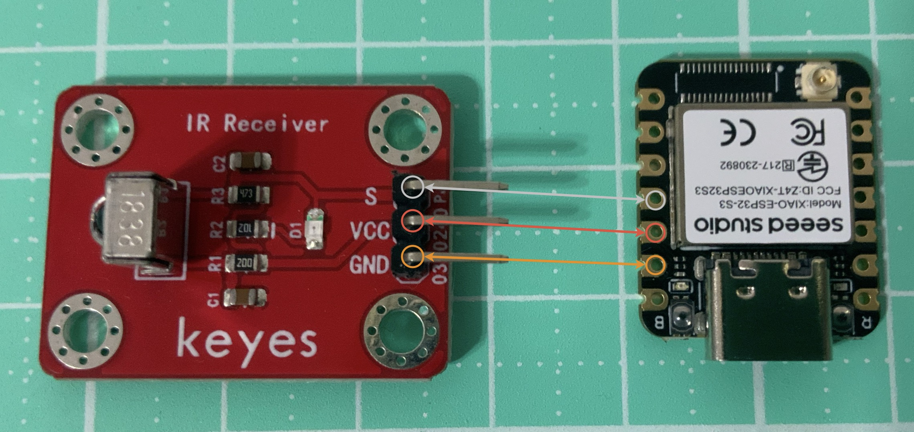

腳位圖

圖片來源：
Seeed Studio 官方文件
接線圖

- 把Esp32插在麵包板左側正中間。
- Esp32的GND接在模組的GND。
- Esp32的3V3接在模組的VCC。
- Esp32的GPIO 9接在模組的S。

Receiver.py
from machine import Pin
import time
# ========= VS1838B 紅外線接收 =========
# 將 GPIO9 設定為輸入，用來接收紅外線訊號
ir = Pin(9, Pin.IN)
# 接收狀態旗標，用來記錄是否收到紅外線
收到紅外線 = False
def ir_callback(pin):
# 使用全域變數記錄接收狀態
global 收到紅外線
收到紅外線 = True
# 偵測到紅外線時顯示提示
print("📡 偵測到紅外線")
# 設定中斷
# VS1838B 偵測到紅外線時，OUT 腳位會變成 LOW
ir.irq(trigger=Pin.IRQ_FALLING, handler=ir_callback)
print("開始接收紅外線（10 秒）")
# 等待 10 秒接收紅外線
time.sleep(10)
# 停止中斷接收
ir.irq(handler=None)
print("接收結束")
# 根據旗標判斷結果
if 收到紅外線:
print("✅ 10 秒內有收到紅外線")
else:
print("❌ 10 秒內沒有收到紅外線")